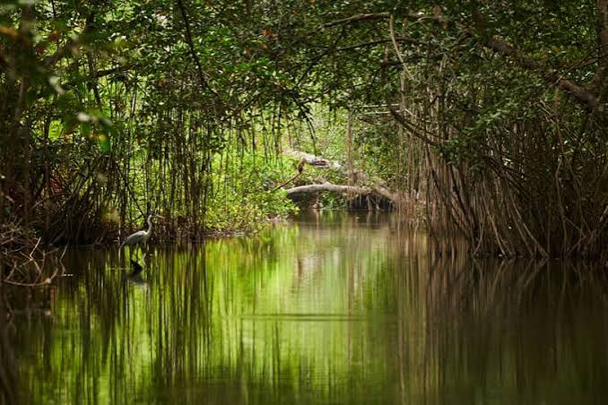

Habitat
Mangroves support fish, crustaceans, birds, and many other organisms.

A vast web of mangrove forests, tidal channels, mudflats, and islands spreads across the Ganges-Brahmaputra delta.
Enter the ecosystem ↓Mangroves are salt-tolerant trees and shrubs adapted to coastal environments where tides regularly flood the land.
Many mangroves have specialised root systems that help them cope with waterlogged, oxygen-poor mud and shifting sediments.
Tides move water and sediment through the delta. These waterways connect habitats and shape the landscape over time.
The Sundarbans spans parts of India and Bangladesh. Its landscape is continually influenced by river flow, tides, sediment, storms, and sea-level change.
Understand the challenge ↓Mangroves support fish, crustaceans, birds, and many other organisms.
Mangrove vegetation can reduce wave energy and help stabilise shorelines in suitable conditions.
Habitat loss, pollution, changing salinity, and climate pressures make protection important.
The Sundarbans is also known for its Bengal tiger population and rich wildlife. Sightings are not guaranteed, and the ecosystem must be respected as a wild habitat.
Next wonder: Chandipur Beach ↗